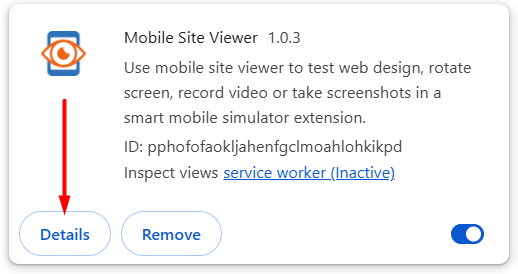
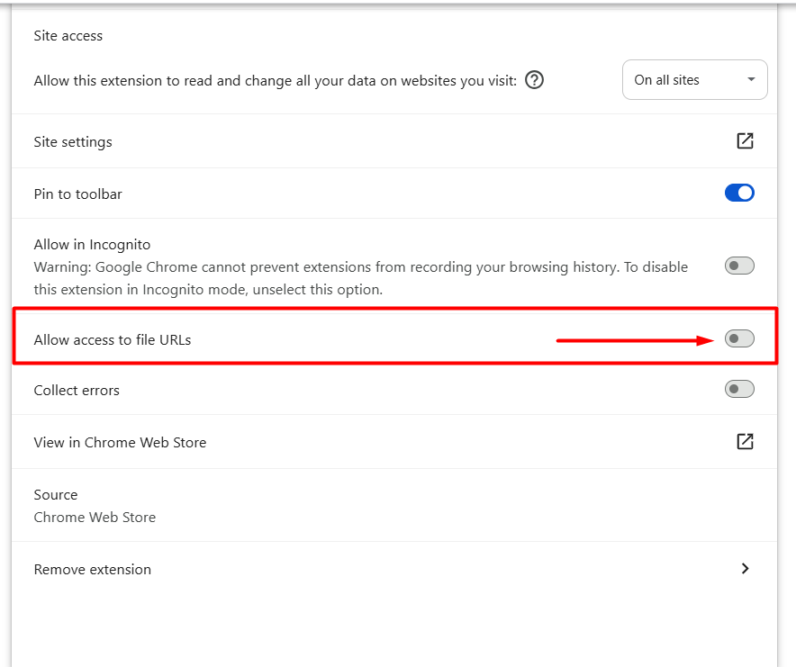

Enabling Mobile Site Viewer for Local Files
1Open the extensions page (type chrome://extensions in the address bar), find Mobile Site Viewer in the list and click the Details button under it.

2Scroll down to the Allow access to file URLs toggle and switch it on.

That's it. Open any local HTML file in Chrome and click the Mobile Site Viewer icon — the simulator will launch as usual. The setting persists across browser restarts.